Vanessa-Automation - это фреймворк для разработки в 1С используя методологию BDD.
Страница проекта: https://github.com/Pr-Mex/vanessa-automation
Vanessa-Automation является аналогом Cucumber для разработки на платформе 1С:Предприятие.
Поддерживаются версии платформы:
8.3.6 в режиме совместимости 8.2, 8.3.6, 8.3.7, 8.3.8, 8.3.9, 8.3.10, 8.3.11, 8.3.12, 8.3.13, 8.3.14,
8.3.15, 8.3.16.
У обработки есть Управляемая форма (она является основой) и Обычная форма.
Обычная форма поддерживается в ограниченном формате. Т.е. ошибки исправляются - новые фичи добавляются редко. Но вы можете добавить в неё нужные Вам фичи самостоятельно.
Разделы справки:
1 . Правила написания feature файлов.
1.1 Основные секции feature файла.
1.1.1 Заголовок feature
1.1.2 Сценарии
1.1.3 Структура сценария
#Тег @tree
#Тег @exportscenarios
1.4 Передача в шаг таблицы.
1.5 Вызов структуры сценария как вложенного сценария.
1.6 Передача параметра таблицы (таблиц) во вложенный сценарий.
2. Как загрузить feature файл. Тэги.
3. Как запустить feature файл на выполнение. Отладка.
4. Как создать epf файл на основе feature файла.
5. Описание настроек на закладке Сервис.
* Открытие фичи в текстовом редакторе
6. Асинхронные вызовы
7. Как получить отчет Allure, jUnit, Cucmber report.
8. Запись действий пользователя.
9. Как получить состояние формы TestClient.
10. Как подключить свою библиотеку.
11. Как поделиться своими шагами с коллегами при групповой разработке.
12. Основные операции при работе с TestClient.
12.1 Как сравнить табличный документ с эталоном.
13. Как создать автоинструкцию в формате HTML, MD.
14. Как создать автовидеоинструкцию.
15. Как узнать детали ошибки.
16. Работа со сценариями на других языках.
17. Список экспортных процедур и функций.
18. Запуск Vanessa-Automation на CI.
19. Инструкция для контрибьютерров.
20. SikuliX.
20.1 Установка SikuliX
20.2 SikuliX сервер
21. Работа с глобальными переменными.
1 . Правила написания feature файлов.
1.1 Основные секции feature файла.
Feature файл должен быть написан на языке Gherkin.
Feature файл содержит в себе две основные секции - это заголовок фичи и её сценарии.
Заголовок.
Заголовок фичи содержит в себе служебную секцию с директивой, указывающей на язык (русский, английский и т.д.) фичи.

Далее в заголовке обычно идут теги, которые относятся ко всей фиче (ещё бывают теги, которые относятся к конкретному сценарию).

Далее идёт часть, в которой используется ключевое слово Функционал или Функциональность и далее идёт название фичи.

Далее идёт часть, в которой коротко даётся ответ на три вопроса: кто хочет, что он хочет и зачем это надо (бизнес польза).

Далее идёт необязательная секция Контекст. В ней обычно описывают шаги, которые подготавливают выполнения сценария, но непосредственно к нему не относятся.
В одном feature файле может быть много сценариев, и секция Контекст будет выполняться перед каждым сценарием.

Далее идёт часть, в которой могут располагаться либо простые сценарии, либо сценарии специального формата, которые в русском переводе "Scenario Outline" получили название "Структура сценария".
Сценарии.
Обычный сценарий начинается с ключевого слова "Сценарий:", затем идёт имя сценария.

Далее идут шаги сценария. Каждый шаг должен начинаться с ключевого слова, такого как Дано, Когда, Тогда, И, Затем и т.д.
Полный список ключевых слов для каждого языка можно посмотреть здесь: https://github.com/cucumber/gherkin/blob/master/gherkin-languages.json#L2372
Ограничений на количество использований ключевых слов шагов нет.

У шагов могут быть параметры простых типов - число, строка, дата.
Числа записываются как есть.

Даты могут быть указаны в двух форматах

Строки должны быть заключены либо в апострофы, либо в кавычки.

Для строк действуют правила экранирования спецсимволов.
\' - означает апостроф
\" - означает кавычку
\\ - означает одинарный слеш (\)

Структура сценария
Структура сценария допускает, что некоторые параметры в шагах указываются в специальных скобках.
Такие параметры должны быть описаны в таблице, которая идёт после структуры сценария и начинается с ключевого слова "Примеры".
Таким образом, для каждой строки таблицы Примеров будет выполнен свой сценарий со своим набором параметров.

1.2 Тег @tree
Vanessa-Automation умеет работать с расширенным синтаксисом языка сценариев Gherkin. Назовём его Turbo Gherkin.
Если в заголовке фичи указан тег @tree, тогда парсер фич будет особым образом интерпретировать отступы (символы Tab, пробелы недопустимы!!!) в тексте.
Шаги будут образовывать дерево шагов. Т.е. шаги с большим значением отступа будут считаться вложенными. Как в python.
Это помогает структурировать текст feature файла.


Таким образом, часть шагов оказалась внутри других шагов. Шаг, который является веткой дерева (выделен рамкой на картинке) - выполняться не будет.
1.3 Тег @exportscenarios
Если в заголовке фичи указан тег @exportscenarios, тогда становится возможным вызывать один сценарий из другого (и передавать в него свои параметры).
Например, есть такой сценарий, содержащий шаг "Когда Я открываю Visual Studio Code":

И рядом с ним (или в подчиненном каталоге, или в каталоге библиотек) лежит другой feature файл, у которого указан тег @exportscenarios и в нём есть сценарий с именем "Я открываю Visual studio code".

Тогда если загрузить первый сценарий в Vanessa-Automation - шаг "Когда Я открываю Visual Studio Code" загрузится как ветка дерева.

Чтобы передать обычный параметр в подчиненный сценарий - надо чтобы строка с именем сценария содержала параметры. Например, есть вот такой сценарий:

В него можно передать свой параметр "ИмяФайла".

Тогда в Vanessa-Automation это отобразится вот так:
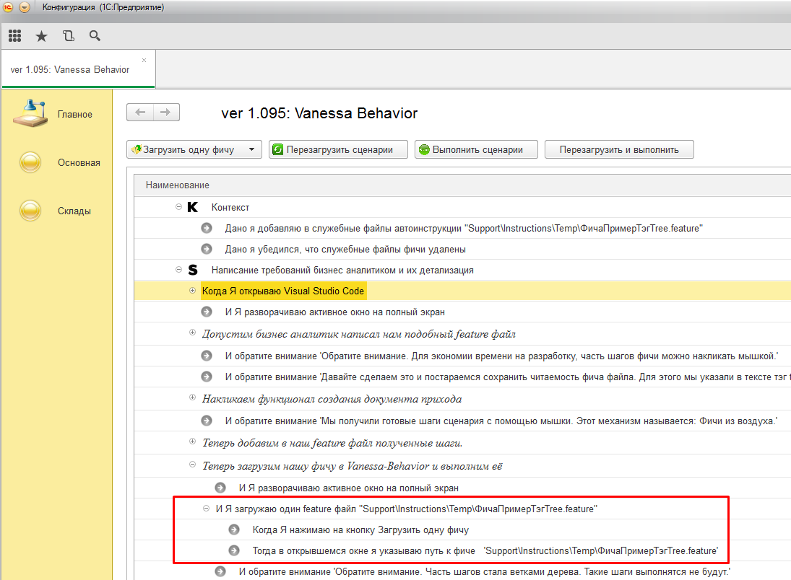
2. Как загрузить feature файл. Тэги.
Vanessa-Automation позволяет загрузить либо один feature файл (Ctrl+F2), либо feature файлы из каталога (Alt+F2).

Если выбран пункт "Загрузить один файл" - тогда feature файл будет загружен, не смотря на наличие в нём тегов.
Если выбран пункт "Загрузить файлы из каталога" - тогда возможны варианты, в зависимости от указанных тегов в настройках Vanessa-Automation.

Если заполнен список "Список исключаемых тэгов" - тогда если в feature файле указан такой тэг в заголовке feature, весь feature файл не будет загружен. Если тэг был указан у одного или нескольких сценариев,
данные сценарии не будет загружены, а остальные загрузятся.
Если заполнен список "Тэги для запуска" - тогда если в feature данный тэг не встречается нигде - весь feature файл будет проигнорирован. Если тэг есть в заголовке feature, тогда будут загружены все сценарии из feature.
Если тэг указан у одного или нескольких сценариев - тогда будут загружены только эти сценарии.
3. Как запустить feature файл на выполнение. Отладка.
Что выполнить все сценарии надо нажать на кнопку "Выполнить сценарии".
Если вы внесли изменения в epf или в фичу, тогда надо нажать на кнопку "Перезагрузить сценарии". Иначе будут использоваться старые версии фич и обработок.
При постоянном внесении правок в фичу или в epf - удобно использовать кнопку "Перезагрузить и выполнить".
Также в Vanessa-Automation можно использовать следующие варианты запуска фич на выполнение (доступно в контекстном меню):

1. Выполнить данный сценарий с текущего шага (Ctrl+F5). Позволяет выполнить сценарий с текущего шага и до конца данного сценария. Другие сценарии выполняться не будут.
2. Выполнить данный сценарий с текущего шага с продолжением (Ctrl+Shift+F5). Позволяет выполнить сценарий с текущего шага. Также будут выполнены сценарии, следующие за данным.
3. Выполнить данный сценарий с начала (Alt+F5). Будет выполнен только данный сценарий начиная с первого шага.
4. Перезагрузить и выполнить данный сценарий (Alt+F6). Будут перечитаны данные фича файлов, epf файлов и будет выполнен только данный сценарий, начиная с первого шага.
5. Выполнить сценарии этой фичи (Ctrl+Alt+F5). Будут выполнены все сценарии данной фичи.
6. Выполнить один шаг (F11). Будет выполнен только один шаг фичи. Можно выбрать любой шаг в дереве фич и выполнить его, включая шаги секции Контекст. Удобно использовать при отладке.
7. Открыть feature файл в редакторе. Откроет приложение, которое ассоциировано с расширением feature.
8. Открыть каталог feature. Откроет проводник с каталогом, где лежит feature файл.
9. Выполнять сценарий с этого шага с сохранением контекстов. Будет выполнен сценарий с текущего шага. При этом будет выставлен флаг Сохранять контексты перед выполнением шагов на закладке Сервис, т.е. при выполнении сценария будут запоминаться значения контекстов шагов. При таком режиме запуска удобно делать отладку сценария, когда шаги зависят от значений переменных Контекст и КонтекстСохраняемый. При первом запуске сценария с данной опцией возможно выполнение сценария с начала, если флаг Сохранять контексты перед выполнением шагов ранее не был равен Истина. При последующих запусках сценарий будет выполняться с нужного шага.
10. Свернуть до фич. Дерево фич будет свёрнуто до строк фич.
11. Свернуть до сценариев. Дерево фич будет свёрнуто до строк сценариев.

12. Брейкпоинт (F9). У строки шага будет установлена отметка брейкпоинта. Выполнение сценариев будет прервано на этом шаге, при этом сам шаг выполнен не будет. Далее удобно выполнять отладку по одному шагу (F11).
13. Убрать все брейкпоинты (Ctrl+F9). Убирает все брейкпоинты из дерева.
4. Как создать epf файл на основе feature файла.

1. Если мы работаем в режиме управляемых форм - надо выставить флаг "Генерировать управляемую форму".
2. Если выставить флаг "Создавать области при генерации кода" - внутри epf будут созданы области кода.

3. Флаг "Создавать закомментированный код для переиспользуемых процедур" сейчас не используется.
4. Флаг "Выводить текст получаемого модуля, вместо перегенерации EPF" - позволяет вывести модуль в текстовый документ, не создавая epf.
5. Если epf уже существует, тогда в неё будут добавлены новые шаги. При этом существующие процедуры, функции, макеты и т.д. в epf сохранятся.
6. Epf будет создана с тем же именем файла, что и feature файл.
7. EPF создаётся с помощью штатных средств платформы. В поле "Версия платформы для генерации EPF" надо указать путь к каталогу bin нужной версии платформы 8.3.10 или выше.
8. Epf будет создана в каталоге "step_definitions", который будет находится в каталоге feature файла.
9. Каждая epf должная обладать уникальным значением в поле "Имя". Если вы копируете (а не перемещаете) epf в другой каталог, тогда надо обеспечить уникальность этого поля.

Поле "Команда открытия фичи в текстовом редакторе".
Позволяет указать команду, которая будет вызываться для открытия фичи в текстовом редакторе.
В отличии от простого открытия файла, позволяет перейти сразу к нужной строке файла.
Пример команд:
NotePad++: "C:\Program Files (x86)\Notepad++\notepad++.exe" %Feature% -n%LineNumber%
VsCode: "C:\Program Files (x86)\Microsoft VS Code\code.exe" -g %Feature%:%LineNumber%
Примеры команд также доступны из контекстного меню поля.

1. Для формирования отчета в формате Yandex Allure нужно заполнить данные настройки

2. При формировании отчета поддерживаются директивы, которые можно указать в feature файле.
Например:
#report.feature=уровень1
#report.story=уровень2
Значения таких директив могут быть любыми.
Таким образом можно задать нужную иерархию отчета (первый, второй и третий уровень дерева).
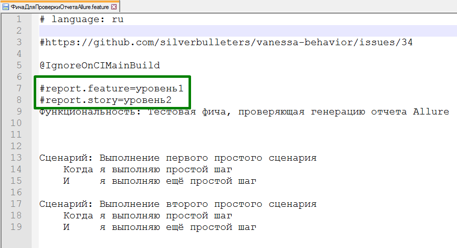
Чтобы иерархия отчета строилась верно, нужно в управляющем json файле задать параметры. Например:
"КаталогОтносительноКоторогоНадоСтроитьИерархию": "./features",
"УровеньОтчета1": "#report.epic=;Каталог1",
"УровеньОтчета2": "#report.feature=;Каталог2",
"УровеньОтчета3": "#report.story=;ИмяСценария"
В данном примере, для вычисления первого уровня иерархии отчета сначала будет попытка найти в тексте фича файла строку вида "#report.feature=уровень1". Если не получится найти такую строку, тогда будет попытка вычислить имя каталога первого уровня относительно каталога (параметр КаталогОтносительноКоторогоНадоСтроитьИерархию), в котром лежат фича файлы (второе значение параметра "УровеньОтчета1" = Каталог1 (Catalog1)).
Также для параметров "УровеньОтчетаX" можно использовать значения "ИмяФичи" (FeatureName), "ИмяФичаФайла" (FeatureFileName), "ИмяСценария" (ScenarioName).
Для третьего уровня также можно указывать "НеИспользовать" (DoNotUse), чтобы отключить третий уровень иерархии.
Такие же правила распространяются на поле "Группировка test suites".
Также, если в управляюхем json указано значение параметра "ДобавлятьКИмениСценарияУсловияВыгрузки": "Истина", то к имени сценария будет добавлятся имя сборки. Это полезно, когда один и тот же сценарий запускается в разных окружениях (сборках) и надо получить единый отчет по всем сборкам.
3. Отчеты в формате jUnit и Cucumber report формируются аналогично.
4. Параметры формирования отчета также можно задать через json файл, когда ванесса запускается в режиме командной строки.
5. Для структуры сценария имя "примера" будет взято из колоноки "Description" или "Описание". Если такой колонки нет, тогда имя "примера" будет взято из определения примера в структуре сценария.
8. Запись действий пользователя.
Запись поведения пользователя
1. На вкладке «Работа с UI» имеется набор кнопок, отвечающих за взаимодействие с клиентом тестирования из Vanessa Automation.
«Подключит TestClient» - запуск клиента тестирования
«Начать запись поведения» - запуск клиента тестирования и начало запись журнала действий пользователя.
«Закончить запись поведения» - останавливает запись журнала действий пользователя и производит автоматическую конвертацию в сценарий на языке Gherkin.
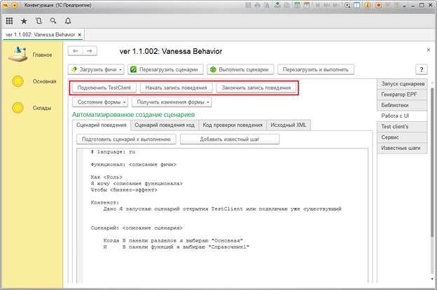
Создание сценария через запись действий пользователя.
Используя данную последовательность шагов удобно просить сотрудников компании воспроизвести ошибку в конфигурации или порядок рабочий действий для создания фичи и уменьшения технического долга.
1.На рабочем месте пользователя запускаем конфигурацию в режиме предприятия с установленным параметром запуска /UILogRecorder

2. Нажимаем «Начать запись»

3. Просим пользователя воспроизвести последовательность действий и по окончании нажимаем кнопку «Завершить»
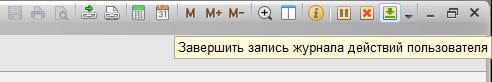
4. Откроется файл журнала действий пользователя, который необходимо сохранить и передать разработчику

5. В дальнейшем для получения сценария на языке Gherkin необходимо в обработке Vanessa Automation перейти на вкладку «Работа с UI -> Исходный XML». Вставить содержимое журнала действий пользователя в соответствующее окно.

Нажать кнопку «Преобразовать исходный XML» и получить готовый сценарий.

В дальнейшем полученный сценарий нужно отредактировать – заполнив описательную часть сценария.
Используя уже существующие шаги
Для добавления шагов в сценарий достаточно нажать кнопку «Добавить известный шаг» и добавить нужный функционал сценария двойным кликом мышки на нужной строке.

Запуск полученного сценария
1. Сохраняем полученный сценарий и запускаем так, как описано в разделе Как загрузить feature файл. Тэги.
2. Для быстрой проверки корректности сценария нажимаем кнопку «Подготовить сценарий к выполнению». В этом случае произойдет загрузка сценария аналогично использованию команды «Загрузить фичи -> Загрузить один файл»
Внимание. Полученный сценарий сохраняется в файл во временной директории операционной системы. В случае использования функции «Генерация EPF», полученная таким образом обработка сохраниться рядом с файлом фичи.
1. Выбрать опцию - Получить изменения формы. При этом будет сгенерирован текст шагов, которые описывают состояние активной формы TestClient.
2. Если перед получением состояние формы была выбрана опция - "Запомнить состояние формы TestClient", тогда при генерации шагов будут учитваться только изменения между сохраненным состоянием формы и текущим.

3. Также для исследования состояния формы можно выбрать опцию "Исследователь формы". Данный компонент позволяет определить какой элемент формы в данный момент активен, получить сведения по нему и варианты текста шагов.
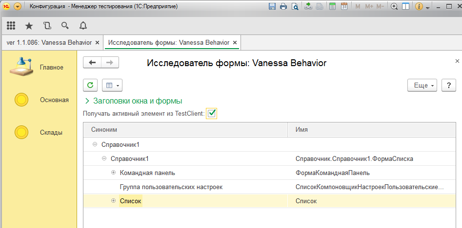
12. Основные операции при работе с TestClient.
Надо понимать следующее. У платформы есть разные способы получить данные табличного документа из TestClient.
-
Если у вас версия платформы 8.3.8 и выше, тогда вам доступен метод ЗаписатьСодержимоеВФайл().
Этот метод позволяет сэмулировать сохранение табличного документа в файл. И таким образом его может получить TestManager для обработки.
Но этот метод не работет, когда TestClient запущен как Web клиент.
Плюс этот метод не сработает, если табличный документ не доступен для редактирования.
Поэтому у платформы есть второй метод: ПолучитьТекстОбласти(<Область>).
Хорошая новость: этот метод позволяет обратиться к нужной ячейке по её адресу и получить её текст.
Плохая новость: для обхода табличного документа таким способом нужно знать его высоту и ширину.
Хорошая новость: в режиме Web клиента при вызове УстановитьТекущуюОбласть(<Область>), при попытке выйти за границы макета происходит возврат на его край.
Таким образом можно нащупать где заканчивается макет, и пользователю необязательно указывать его границы.
Плохая новость: в тонком клиенте такой трюк не работает. При попытке активизировать ячейку за границей макета - это и проихсодит.
Поэтому пользователю надо знать границы макета заранее, чтобы прочитать его по ячейкам в тонком клиенте.
-
Как прочитать табличный документ в своём сценарии и сравнить с ожидаемым значением:
Для чтения макетов VB использует следущие методы:
ПолучитьТабличныйДокументTestClient - возвращает ТабличныйДокумент
ПолучитьТабДокИзTestClientКакМассив - возвращает массив
Вы можете использовать типовые шаги из поставки VB, такие как:
И Табличный документ "РеквизитТабличныйДокумент" стал равен макету "ИмяМакета"
И область "R1C1:R10C10" табличного документа "РеквизитТабличныйДокумент" равна макету "ИмяМакета"
И табличный документ "РеквизитТабличныйДокумент" стал равен:
| Значение1 | Значение2 |
| Значение3 | Значение4 |
-
Подведем итог выше сказанного:
1. Если у вас 8.3.8 и выше (лучше 8.3.10 и выше), тогда вы можете не указывать область чтения макетов.
VB будет их считывать целиком как в тонком клиенте так и в Web.
Т.е. вам не придётся делать разные сценарии для тонкого клиента и web клиента.
Но макет должнен быть "Доступен" пользователю (метод ТекущаяДоступность()).
2. Если вы хотите сравнить часть макета с эталоном - используйте шаг
И область "R1C1:R10C10" табличного документа "РеквизитТабличныйДокумент" равна макету "ИмяМакета" или подобные шаги
3. Если у вас версия платформы меньше 8.3.8 (не рекомендуется), тогда даже перед чтением макета целиком, надо будет указывать область чтения через специальный шаг
Когда Я задаю параметры чтения области макета "R1C1:R100C20"
По умолчанию область чтения задана как "R1C1:R30C20" (30 рядов и 20 колонок).
Важно! Если вы изменили область чтения, то она применится и при чтении следующих табличных документов.
13. Как создать автоинструкцию в формате HTML, MD.
Основные принципы:
1. Каждый шаг в инструкции будет описан текстом шага, либо произвольным текстом тега #[autodoc.text] .
Управляющие конструкции:
Управляющие конструкции более подробно описаны ниже в разделе "Как создать автовидеоинструкцию".
Настройки:
1. Автонумерация шагов инструкций - если флаг установлен, то перед текстом шага будет добавлена авто нумерация.
Для того что бы лидирующие нули не терялись в тексте, в случае авто нумерации, текст вынесен в блок кода. В ином
случае текст не выносится в блок кода.
P.S.
При использовании плагина "Markdown Emoji" и отключенной галочки авто нумерации, в текст тега #[autodoc.text] можно добавить код эмодзи(смайлики) из списка сайта в любое место текста.
![]()
Первое что надо сделать:
Далее изложу основные принципы:
1. Каждый шаг в видеоинструкции будет озвучен и к нему будут добавлены субтитры.
2. Каждый шаг видео может масштабироваться по времени (т.е. стать длиннее или короче). Это нужно, чтобы синхронизировать видеоряд и озвучку.
3. Чтобы сделать видео вставку в произвольном месте нужно использовать шаг
И обратите внимание "Текст видеовставки."
4. Все группы шагов будут автоматически преобразованы в видеовставку (белый текст на черном фоне). Вот пример.

5. Есть специальные управляющие конструкции, которые надо указывать в тексте сценария перед нужным шагом или группой.
1) Произвольный текст шага. autodoc.text
Пусть в сценарии есть шаг: Когда В командном интерфейсе я выбираю "Основная" "Справочник1"
Тогда если перед ним (т.е. строкой выше) написать: #[autodoc.text] В интерфейсе \[я\] выбираю %2 и %1 ["" + ТекущаяДата()]
тогда при формировании инструкции текст шага будет таким:
В интерфейсе [я] выбираю "Справочник1" и "Основная" 08.04.1981 01:00
Т.е. %2 и %1 были заменены на параметры шага. Выражение ["" + ТекущаяДата()] было вычислено через метод Вычислить().
А текст \[я\] содержал в себе экранирование квадратных скобок.
"\n" - позволяет перевести текст на новую строку.
2) Не включать шаг в инструкцию. autodoc.ignorestep Если перед шагом или группой шагов написать #[autodoc.ignorestep], тогда он/они будет выполнен, но не попадёт в финальный видео файл.
3) Отключить автомасштабирование шага или группы. autodoc.donotscale Если перед шагом или группой написать #[autodoc.donotscale], тогда он не будет сжиматься по времени для синхронизации голоса и видео.
4) Сделать из группы шагов один шаг. autodoc.groupsteps
Пусть в сценарии есть группа шагов с текстом: Просто группа шагов
Если перед ней написать #[autodoc.groupsteps] В интерфейсе я выбираю Справочник1 и Справочник2 ["" + 11 + 22] тогда
а) Вся группа шагов будет восприниматься как один шаг.
б) Специальная видеовставка для группы создаваться не будет.
в) В финальном видео эта группа станет одним шагом с текстом В интерфейсе я выбираю Справочник1 и Справочник2 1122
г) Если после директивы #[autodoc.groupsteps] не указан текст, тогда будет использовано текущее имя группы.
5) Исключить слайд сценария. autodoc.ignore.scenarioslide
Для исключения слайда сценария с текстом Сценарий. <Текст сценария> надо перед строкой, где объявляется сценарий написать #[autodoc.ignore.scenarioslide]
6) Исключить слайд с заголовком фичи. autodoc.ignore.featureslide
Для исключения слайда с заголовком фича файла надо перед строкой, где объявляется имя функциональности написать #[autodoc.ignore.featureslide]
7) Исключить финальный слайд, где указана данные по сборке сценария. autodoc.ignore.finalslide
Для исключения слайда с заголовком фича файла надо перед строкой, где объявляется имя функциональности написать #[autodoc.ignore.finalslide]
8) Изменить голос, для конкретного шага.
В настройках видео задается основной голосовой движок и голос, который будет использоваться для озвучивания инструкции.
Для изменения голоса перед шагом необходимо указать голосовой движок, голос и интонацию (для amazon можно указать язык). Параметры могут задаваться:
- кратко (для Уandex): @YandexTTS: ermil,evil
- развернуто @YandexTTS: voice = ermil; emotion = evil
@AmazonTTS: voice = Kimberly; lang = en-US
При краткой записи первый параметр - голос, второй эмоция, при развернутой записи порядок не важен, параметры разделяются ; .
У Yandex шесть голосов и три эмоции, у Amazon голосов намного больше, полный список можно увидеть на странице настройки аудио в выпадающих списках.
9) Автоперемещение курсора мышки к элементу формы или элементу интерфейса.
Для включения опции нужно установить флаг "Эмулировать движения мышки".
Если флаг установлен, то при выполнении шагов будет выполняться попытка найти элемент формы или элемент управления на экране и переместить курсор мышки к нему.
Для поиска картинки и передвижения мышки используется SikuliX. Картинка для поиска будет сгенерирована по тексту, полученному из элемента формы.
Чтобы отключить движение мышки у конкретного шага надо использовать директиву #[DoNotMoveMouse].
10) Отключение озвучивания шага.
Для отключения озвучивания шага нужно использовать директиву #[autodoc.mute].
Допустим у вас возникла ошибка сравнения двух таблиц. В дереве сценария это выглядит примерно так.

Делаем двойной клик по строке упавшего шага (показан стрелкой). Тогда появится такое окно

В этом окне можно увидеть более детальную информацию об ошибке.
Также, в том случае, если шаг проверял равенство таблиц или макетов, можно использовать кнопку "Сравнить таблицы", нажатие на которую покажет стандартное окно сравнения табличных документов.
Если флаг "Только текст ячек выставлен" - то сравниваться будут только тексты ячеек макетов, без учёта их оформления.
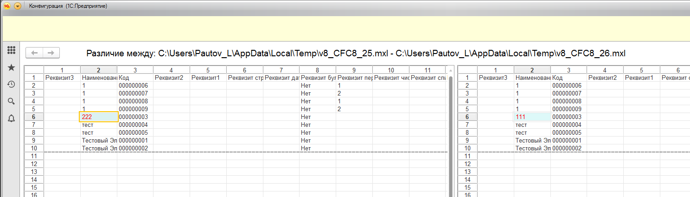
Vanessa-Automation позволяет работать со сценариями на разных яхыках.
1. Чтобы выбрать язык, на котором вы хотите накликать фичу - надо использовать соответствующую настройку.
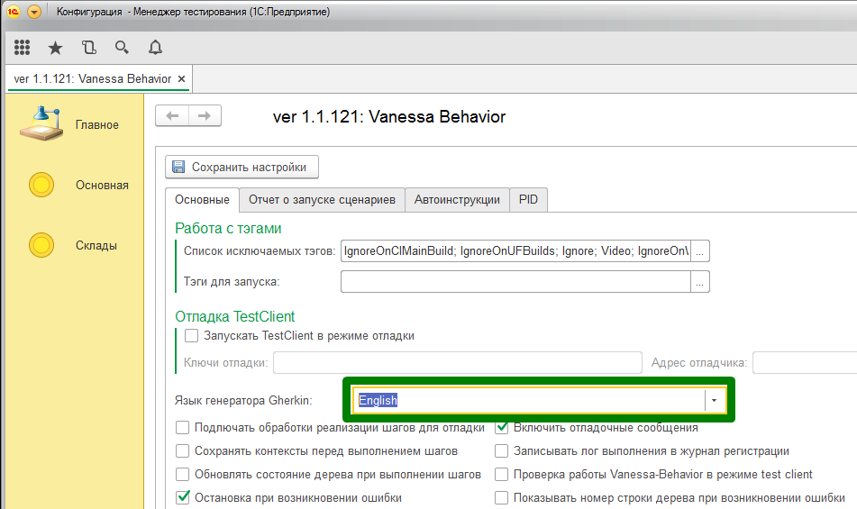
2. Далее, при накликиванни фичи ваш сценарий будет автоматически переводится на выбранный язык. Чтобы работал перевод - должен быть заполнен файл перевода шагов, расположенный тут
{КаталогVB}\locales\Gherkin\ например en.mxl.
3. Также вам станет досупна кнопка перевода сценария с русского языка на выбранный вами язык.

4. Также при просмотре дерева известных шагов - вы можете выбрать опцию "Показать шаги на Русском"

Это может помочь русскоговорящим пользователям при поиске шагов на другом языке.
5. Также Исследователь форм будет предлагать вам шаги на том яызке, который указан в настройках.
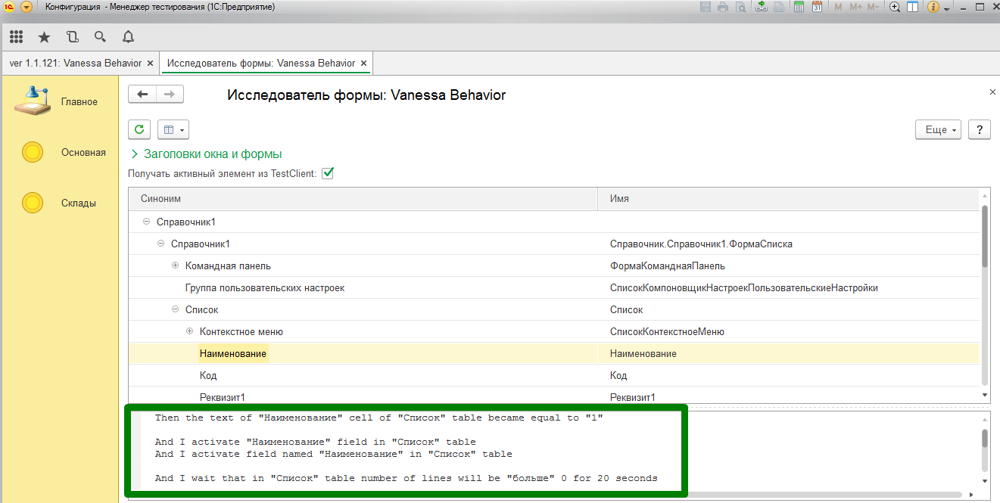
Последний дистрибутив можно скачать по ссылке (на момент написание статьи текущий релиз 1.1.3)
1. Скопировать скаченный файл в директорию D:\SikuliX\
2. Запустить файл и согласиться с установкой
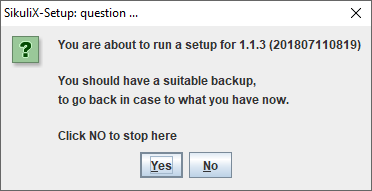
3. В настройка установки выбрать Pack1. Оставить по умолчанию язык - Python

3. Согласиться с установкой
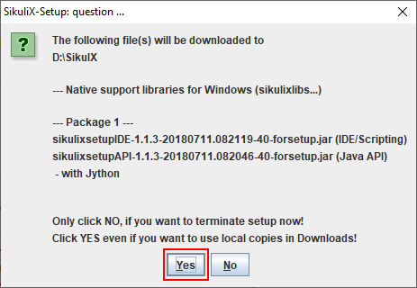
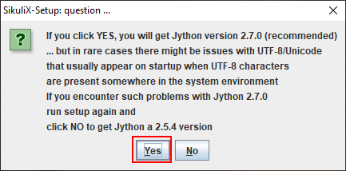
4. В результате успешной установки будет выведено соответствующее окно.
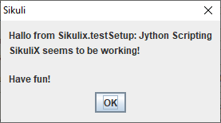
5. Прописать в системную переменную среды Path путь к каталогу SikuliX (D:\SikuliX).
Проверить правильность указания путь можно запустив консоль и выполнив команду:
where runsikulix
в результате будет выведен путь нахождения команды
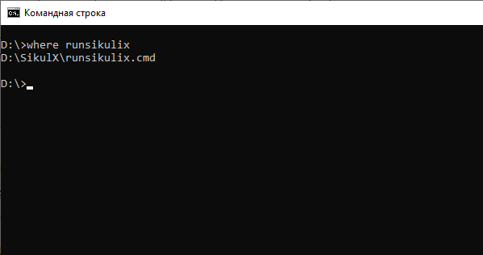
1. SikuliX сервер нужен, чтобы ускорить работу сценариев, которые многократно вызывают скрипты SikuliX. Таким образом с помощью Vanessa Automation можно писать быстрые сценарии, которые могут интерактивно работать с экраном пользователя.
2. Большая часть скриптов SikuliX не требует специальной адаптации для работы на SikuliX сервере.
3. Чтобы использовать SikuliX сервер нужно установить флаг "Использовать SikuliX сервер" и указать каталоги (через точку с запятой) скриптов SikuliX.

4. При такой настройке вызов Ванесса.ВыполнитьSikuliСкрипт() будет перенаправлен в метод Ванесса.ВыполнитьSikuliСкриптЧерезSikuliXСервер() (поэтому большую часть сценариев, которые уже используют SikuliX скрипты переделывать не надо).
5. При этом будет запущен специальный сеанс SikuliX, если его ещё нет.
6. Будет собран специальный SikuliX скрипт, который представляет собой компиляцию всех скриптов, которые были в каталоге (каталогах) в параметра "Каталоги скриптов SikuliX". Скрипт будет размещён в первом каталоге с именем SikuliXServer.sikuli.
7. Скрипты, принимающие аргрументы вида "sys.argv[1]" также будут корректно обработаны.
8. Запуск SikuliX сервера доступен через управляющий json файл. Параметры: "КаталогиСкриптовSikuliX" и "ИспользоватьSikuliXСервер".
1. В Vanessa Automation есть возможность работать с глобальными переменными. Они бывают двух типов.
1) Переменные, которые хранятся в служебной структуре Контекст. Они существуют на время жизни одного сценария.
2) Переменные, которые хранятся в служебной структуре КонтекстСохраняемый. Они существуют, пока открыта форма Vanessa Automation.
2. В стандартной библиоетке шагов Vanessa Automation есть готовые шаги, которые позволяют сохранить нужное значение в переменную, а затем его использовать. Например:
И я запоминаю значение текущего поля как "ИмяПеременной"
И в поле с именем "ИмяПоля" ввожу значение переменной "ИмяПеременной"
3. Возможные варианты синтаксиса для сохранения значения переменной:
И я запоминаю значение текущего поля как "ИмяПеременной" - Переменная будет сохранена в Контекст
И я запоминаю значение текущего поля как "$ИмяПеременной$" - Переменная будет сохранена в Контекст
И я запоминаю значение текущего поля как "$$ИмяПеременной$$" - Переменная будет сохранена в КонтекстСохраняемый
4. Возможные варианты синтаксиса для чтения значения переменной:
И в поле с именем "ИмяПоля" ввожу значение переменной "ИмяПеременной" - значение переменной будет взято из Контекста
И в поле с именем "ИмяПоля" ввожу значение переменной "$ИмяПеременной$" - значение переменной будет взято из Контекста
И в поле с именем "ИмяПоля" ввожу значение переменной "$$ИмяПеременной$$" - значение переменной будет взято из КонтекстаСохраняемого
5. Имена переменных должны соответствовать правилам помещения значений в Структуру (нельзя использовать пробелы, спецсимволы и т.д.)